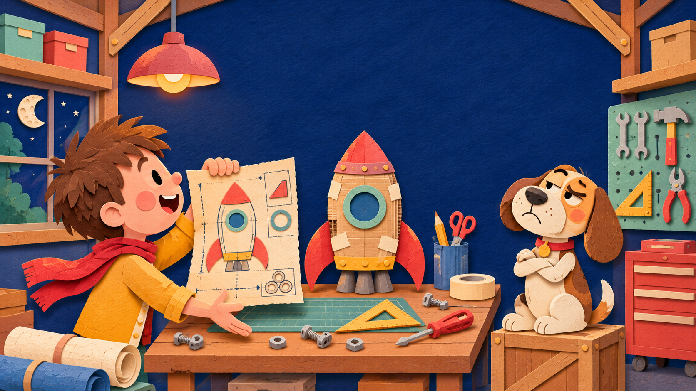

Page 4 of 757%
PAGE 4 · A SECOND OPINION
The dog had questions.
Johnny held up the blueprint. His dog tilted his head, blinked once, and gave the rocket a look that said, “Are you sure about this?”
Ask the expert Press “Ask the dog” to hear his thoughts.